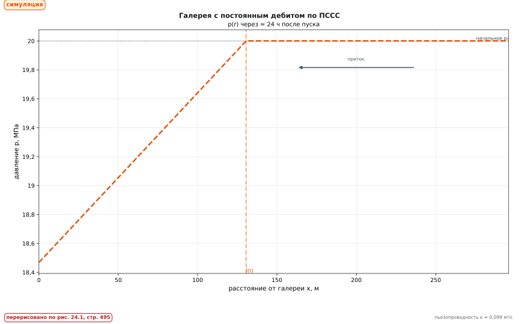

Стр. 495 · §1. Метод последовательной смены стационарных состояний
Прямолинейно-параллельный неустановившийся фильтрационный поток упругой жидкости.
Неустановившееся движение упругой жидкости в упругом пласте. Метод ПСССШаг 47 из 60
В книге: «Прямолинейно-параллельный неустановившийся фильтрационный поток упругой жидкости» стр. 495
Опирается на: шаг 46 «Где проходит условный фронт давления» (предпосылка), шаг 24 «Пуск галереи с постоянным дебитом» (предпосылка), шаг 45 «Нестационарный процесс как серия стационарных» (пример)
При постоянном отборе из галереи давление внутри возмущённой зоны в каждый момент линейно.
Зона растёт: её длина l(t) — главное неизвестное расчёта.
Вне зоны давление остаётся начальным pк.
Пороговая идея. Читать линейный профиль по расстоянию от галереи и отделять это расстояние от длины зоны. модель
Первый расчёт по ПССС — прямолинейно-параллельный поток упругой жидкости. Галерея — прямолинейная выработка, к которой притекает жидкость. Её пускают в момент t = 0 и держат постоянный дебит Q. стр. 495
«Прямолинейно-параллельный неустановившийся фильтрационный поток упругой жидкости.»
«Пусть в момент времени $t = 0$ в горизонтальном пласте постоянной толщины $h$ и ширины $B$ пущена в эксплуатацию прямолинейная галерея, на которой поддерживается постоянный дебит $Q$.»
Автор принимает допущения о пласте. Пласт горизонтальный, его толщина h и ширина B постоянны. До пуска галереи давление во всём пласте одинаково и равно pк. стр. 495
«в горизонтальном пласте постоянной толщины $h$ и ширины $B$ пущена в эксплуатацию прямолинейная галерея»
«До пуска галереи давление во всем пласте было одинаковым и равным $p_к$.»
К моменту t граница возмущённой области уходит от галереи на длину l(t). Внутри этой зоны распределение давления считают установившимся. Значит, профиль давления — прямая линия. стр. 495
«К моменту времени $t$ после пуска галереи граница возмущенной области распространится на длину $l(t)$ (рис. 24.1).»
«Распределение давления в этой области считается установившимся (см. гл. XX, §2), т.е. описывается линейной зависимостью:»

По формуле (24.1) давление в точке x равно pк минус произведение двух множителей. Первый — градиент Qμ/(kBh). Второй — расстояние l(t) − x от точки до границы. На границе x = l(t), и давление равно pк. стр. 495
«$$p(x, t) = p_к - \frac{Q\mu}{kBh} (l(t) - x), \quad 0 \leq x \leq l(t). \quad (24.1)$$»
Формула (24.1) действует только от галереи до границы включительно: 0 ≤ x ≤ l(t). За границей давление остаётся pк. Продолжать прямую за границу нельзя. стр. 495
«$$p(x, t) = p_к - \frac{Q\mu}{kBh} (l(t) - x), \quad 0 \leq x \leq l(t). \quad (24.1)$$»
Профиль зависит от неизвестной длины зоны l(t). Поэтому расчёт должен найти закон её изменения во времени. Рисунок 24.1 показывает кривые давления по ПССС для такого потока. стр. 495
«Требуется найти закон перемещения во времени внешней границы возмущенной области $l(t)$.»
«Рис. 24.1. Кривые распределения давления в прямолинейно-параллельном потоке по методу ПССС»
Не путайте x и l. x — где вы смотрите давление. l(t) — докуда дошло возмущение к этому моменту. пояснение модели
Как записать мгновенный профиль
Линейный мгновенный профиль между галереей и границей возмущения. стр. 495
| Обозначение | Что это | Единицы |
|---|---|---|
| $p$ | пластовое давление в рассматриваемой точке | Па |
| $p_к$ | начальное давление в пласте и давление на границе возмущения | Па |
| $Q$ | объёмный дебит жидкости | м³/с |
| $\mu$ | динамическая вязкость жидкости | Па·с |
| $k$ | проницаемость пласта | м² |
| $B$ | ширина пласта | м |
| $h$ | толщина пласта | м |
| $l$ | расстояние от галереи до границы возмущения | м |
| $x$ | расстояние до галереи | м |
| $t$ | время с начала отбора; dt — его малое приращение | с |
Для расчёта «Постоянный отбор из галереи: как выглядит мгновенный профиль давления» отделите исходные параметры от модельных выходов.
Кусочно-заданная функция: активный участок линейный, за ним — значение по умолчанию.
Где аналогия перестаёт работать: Положение переключения задаёт баланс отбора, а не выбор программиста.
Добавьте тест значения на конце каждого участка.
Расставьте шаги записи мгновенного профиля по порядку.
Перетащите пункты (мышью или пальцем за ⠿) или двигайте кнопками ↑ ↓.
Верный ответ: Задайте исходное давление pк, толщину h, ширину B и постоянный дебит Q. → Отметьте текущую длину зоны l(t) от галереи. → Запишите линейный профиль (24.1) от галереи до границы возмущения. → Проверьте, что на границе давление равно pк.
Сначала исходные данные, затем зона, профиль и проверка на границе. Где это в тексте (стр. 495) →
Заполните пропуски о формуле (24.1).
Формула (24.1) действует только от до границы включительно. За границей давление остаётся .
Верный ответ: Формула (24.1) действует только от [галереи] до границы включительно. За границей давление остаётся [pк].
Линейный профиль ограничен возмущённой зоной; вне её давление начальное. Где это в тексте (стр. 495) →
Верный ответ: Закон изменения длины зоны l(t)
pк, B и Q заданы; искать нужно движение границы. Где это в тексте (стр. 495) →
Все утверждения шага с дословной цитатой автора и страницей книги (по PDF).
Первый расчёт относится к прямолинейно-параллельному течению упругой жидкости. наблюдение
«Прямолинейно-параллельный неустановившийся фильтрационный поток упругой жидкости.»
Галерею пускают при t = 0 и поддерживают на ней постоянный дебит Q. допущение
«Пусть в момент времени $t = 0$ в горизонтальном пласте постоянной толщины $h$ и ширины $B$ пущена в эксплуатацию прямолинейная галерея, на которой поддерживается постоянный дебит $Q$.»
Галерея прямолинейна; пласт горизонтален и имеет постоянные толщину h и ширину B. допущение
«в горизонтальном пласте постоянной толщины $h$ и ширины $B$ пущена в эксплуатацию прямолинейная галерея»
До пуска галереи давление во всём пласте одинаково и равно pк. допущение
«До пуска галереи давление во всем пласте было одинаковым и равным $p_к$.»
Спустя время t граница возмущения удаляется от галереи на l(t). вывод
«К моменту времени $t$ после пуска галереи граница возмущенной области распространится на длину $l(t)$ (рис. 24.1).»
Внутри зоны принимают установившееся линейное распределение давления. допущение
«Распределение давления в этой области считается установившимся (см. гл. XX, §2), т.е. описывается линейной зависимостью:»
Внутри зоны давление равно контурному давлению за вычетом произведения градиента Qμ/(kBh) на оставшееся расстояние от точки до границы. вывод
«$$p(x, t) = p_к - \frac{Q\mu}{kBh} (l(t) - x), \quad 0 \leq x \leq l(t). \quad (24.1)$$»
Линейная формула (24.1) применяется от галереи до границы включительно. допущение
«$$p(x, t) = p_к - \frac{Q\mu}{kBh} (l(t) - x), \quad 0 \leq x \leq l(t). \quad (24.1)$$»
В расчёте предстоит определить закон изменения l(t). наблюдение
«Требуется найти закон перемещения во времени внешней границы возмущенной области $l(t)$.»
Рисунок 24.1 показывает кривые давления для прямолинейно-параллельного потока по ПССС. наблюдение
«Рис. 24.1. Кривые распределения давления в прямолинейно-параллельном потоке по методу ПССС»
Стр. 495 · §1. Метод последовательной смены стационарных состояний
Прямолинейно-параллельный неустановившийся фильтрационный поток упругой жидкости.
Стр. 495 · §1. Метод последовательной смены стационарных состояний
Случай 1. Приток к галерее, на которой поддерживается постоянный дебит $Q$. Пусть в момент времени $t = 0$ в горизонтальном пласте постоянной толщины $h$ и ширины $B$ пущена в эксплуатацию прямолинейная галерея, на которой поддерживается постоянный дебит $Q$. До пуска галереи давление во всем пласте было одинаковым и равным $p_к$.
Стр. 495 · §1. Метод последовательной смены стационарных состояний
К моменту времени $t$ после пуска галереи граница возмущенной области распространится на длину $l(t)$ (рис. 24.1). Распределение давления в этой области считается установившимся (см. гл. XX, §2), т.е. описывается линейной зависимостью:
Стр. 495 · §1. Метод последовательной смены стационарных состояний
$$p(x, t) = p_к - \frac{Q\mu}{kBh} (l(t) - x), \quad 0 \leq x \leq l(t). \quad (24.1)$$
Стр. 495 · §1. Метод последовательной смены стационарных состояний
Требуется найти закон перемещения во времени внешней границы возмущенной области $l(t)$.
Стр. 495 · §1. Метод последовательной смены стационарных состояний
Рис. 24.1. Кривые распределения давления в прямолинейно-параллельном потоке по методу ПССС
На этот шаг опираются: шаг 48 «Отбор равен убыли упругого запаса», шаг 51 «Постоянное давление на галерее», шаг 54 «Скважина с постоянным дебитом: логарифмический профиль».
Галерея и линейный профиль давления
Ссылки в ответе ведут к исходному тексту.